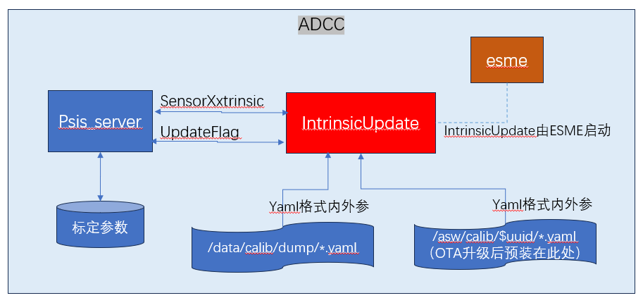

Intrinsics Update Deveopment Specification
Requirements
Because the mass production car currently has the original internal reference of Baolong in Persistent's viewing camera, this affects the stitching diagram of the environment, which will affect the attitude of the parking.The/data/callib/dump or the cloud backup stores our optimized internal reference. The project expects the optimized internal reference to be updated into the Persistent through this OTA.
Plan discussed by the project team
Because the local Folder (/Data/Calib/Dump/XXTRINSIC) or Yaml files in the cloud backup can be obtained in the correct camera.Therefore, this plan is to get the corresponding camera internal reference from the local Folder or the cloud, thereby updating the calibration parameters in the Persistent.
Acceptable risk
Due to time urgency, the software may not be fully tested.But after discussion, the acceptable risks are:
Due to various reasons, CRASH cannot run, which causes the unable to achieve the expected effect
The procedure has no CRASH, but it cannot be successfully updated
There are still some vehicles that have the correct camera internal reference without the local Folder or the backup on the cloud, but the part of the vehicle cannot update the internal reference of the camera
Unacceptable risk
The program can accept the procedure cannot be successfully updated, but it cannot be accepted:
CPU LOAD is too high, so that the system cannot run;
Update failure and causes the original parameters in Persistent to lose
Destruction file system
Overall Design
System Architecture

After the OTA is upgraded, the backup parameters of all vehicles in the cloud will be decompressed under/asw/calib/, named after UUID, and the UUID of each car corresponds to a car.According to the self -car UUID, you can quickly get the cloud parameters corresponding to the car
IntrinsicupDate program is automatically pulled up by ESME
IntrinsicupDate will read the calibration parameter from the Persistent Server, and find the corresponding YAML file from the two directory of the/data/call and/asw/Calib. If you can find the yaml file at any directory, you will pass the relevant verification.Update the internal parameters in YAML to the Persistent Server
In order to ensure that the program is only successfully executed once, it is necessary to write the successfully executed logo in the Persistent Server; when the next start is started, check the bit
Note: /Data/shadow-VEHICLE-Info.json can read UUID, but the premise is that Shadow's service can start
Workflow of Intrinsic Update in OTA2
In the core module of this function, INTRINSICUPDATE, and the PIPELINE after the power is called:
Read UpdateFlag from Persistent Server. If you read Status_default, enter the next step; otherwise, quit this program
Read the SensorxXXTRINSIC structure from Persistent Server.
Call the function RET_VALUE = Updatexxtrinsic (Const SensorXXTRINSIC & OLD_PARAMS, Sensorxxtrinsic & New_params)
Read the/data/Calib/DUMP/XXTRINSIC directory. If the directory exists, jump to C;
According to the self -car UUID, obtain the/asw/Calib/$ UUID directory, if the directory exists, enter the next step; if it does not exist, exit and return to the status_file_not_found;
Analyze the yaml file obtained in A or B. If all the fields are successfully parsed, the next step is to be performed; if the analysis is incorrect, it will exit and return to the status_file_corrupted;
Compare yaml parameters and OLD_PARAMS, according to the comparison results:
If all parameters (including CX/CY) are consistent, then exit and return status_param_same;
If all parameters are the same except to look around CX/Cy, enter the next step;
If there are still other parameters in addition to looking around CX/CY, then exit and return to Status_param_check_failed
Copy the OLD_PARAMS to new_params, and use yaml's CX/CY to update the new_params CX/CY, exit and return the status_success
If RET_VALUE is status_success, Write new_params into persisten and enter the next step
Place UpdateFLAG to Ret_value and write to the Persistent to exit the process.
Workflow of Intrinsic Update in OTA3
In the core module of this function, INTRINSICUPDATE, and the PIPELINE after the power is called:
Read updateFlag from Persistent Server.
Read the SensorxXXTRINSIC structure from Persistent Server.
Call the function RET_VALUE = Updatexxtrinsic (Const SensorXXTRINSIC & OLD_PARAMS, Sensorxxtrinsic & New_params)
According to the self -car UUID, obtain the/asw/Calib/$ UUID directory. If the directory exists, jump to D;
Read the/data/callib/dump/xxtrinsic directory. If the directory exists, jump to D;
Read the/data/asw/callib/dump/xxtrinsic directory. If the directory exists, jump to D, if not exist, then exit and return to the status_file_not_found;
Analyze the yaml file obtained in A or B or C. If all fields are successfully parsed, the next step is to be performed.
Compare yaml parameters and OLD_PARAMS, according to the comparison results:
If all parameters (including CX/CY) are consistent, then exit and return status_param_same;
If all parameters are the same except to look around CX/Cy, enter the next step;
If there are still other parameters in addition to looking around CX/CY, then exit and return to Status_param_check_failed
Copy the OLD_PARAMS to new_params, and use yaml's CX/CY to update the new_params CX/CY, exit and return the status_success
If RET_VALUE is status_success, Write new_params into persisten and enter the next step
Place UpdateFLAG to Ret_value and write to the Persistent to exit the process.
Test Cases
|
|
Test steps |
expected outcome |
screenshot |
Test Results |
|
1 |
Upload a camera parameter to the table, copy it to/asw/Calib/$ UUID directory and/data/call/dump/xxtrinsic directory Write with Persistent Server |
Persistent server returns to write successful |
|
|
|
2 |
Use Persistent Server to read the previously written parameters |
Compare the read parameters with YAML, and the parameters are consistent |
|
|
|
3 |
Modify /ASW/calib/ $uuid/front_Left.yaml and/Data/Calib/DUMP/XXTRINSIC/ front_left.yaml K1 is 0, run INTRINSICUPDATE, read parameters using Persistent Server |
Some of the internal references are inconsistent, the verification fails, and returns status_param_check_faird, the persist parameter is not modified |
|
|
|
4 |
Reset UpdateFlag, revoke the modification of step 3, modify /ASW/Calib/ $uuid/front_left.yaml, clear the file content, run intrinsicupdate, use Persisteent Server to read parameters |
The file parsing errors, returned the status_file_corrupted, the persist parameter was not modified |
|
|
|
5 |
Reset UpdateFlag, revoke the modification of step 4, run intrinsicupdate |
Persist parameters are consistent with yaml parameters, and return status_same, updateFlag = 1 |
|
|
|
6 |
Run intrinsicupdate again |
Due to updateFlag! = Status_default, exit directly, no return value |
|
|
|
7 |
Reset UpdateFlag, modify /ASW/calib/ $uuid/nrcs_front.yaml CX is 100, run into intrinsicupdate |
Other parameters are consistent, CX parameters are inconsistent, return status_success, updateFlag = 1, Persistent Server |
|
|
|
8 |
Use Persistent Server to read the previously written parameters |
Compare the read parameters with YAML, and the parameters are consistent |
|
|
|
9 |
Reset UpdateFlag, delete /data/shadow-vene-info.json, modify /data/calib/dump/xxtrinsic/nrcs_front.yaml is 200, running into intrinsicupdate |
Can't find the UUID file, write the parameters in/data/Calib/Dump/XXTRINSIC, return to the status_success, updateFlag = 1, Persistent Server Return to Write to successfully write it to |
|
|
|
10 |
Use Persistent Server to read the previously written parameters |
Compare the read parameters with YAML, the parameters are consistent, (NRCS_FRONT.YAML CX is 200) |
|
|
|
11 |
Reset UpdateFlag, restore /data/shadow-vefo.json, deletes/asw/Calib/$ UUID directory, modify /data/calib/dump/nrcs_front.yaml is 300, running insicupdate |
Can't find the/asw/Calib/$ UUID directory, write the parameters in the/data/callib/dump/xxtrinsic, return to Status_success, UpdateFlag = 1, Persistent Server back to write successfully |
|
|
|
12 |
Use Persistent Server to read the previously written parameters |
Compare the read parameters with YAML, the parameters are consistent (NRCS_FRONT.YAML CX is 300) |
|
|
|
13 |
Reset UpdateFlag, delete/data/callib/dump/xxtrinsic directory, run intrinsicupdate |
Can't find the above two directory, return status_file_not_found |
|
|
|
14 |
After monitoring, the program running the program running time |
30s after power -on, the program has exited |
|
|
|
14 |
Test the CPU occupation and time consumption of the first and second startup |
The first start of the CPU occupation and time is high, and the second start is low |
|
|
|
15 |
Test whether it affects the function |
No effect on function |
|
|
|
16 |
The version of the simulation problem car is upgraded, the pressure test is done, and the parameters of the persist after running are empty |
Will not be emptied |
|
|
|
17 |
After each of the above tests, the parameter of Persist is modified |
The parameters will not be modified |
|
|